Exercise 2 — Table Services: SAP Sales Orders to a Database
In this exercise you will use the Boomi for SAP UI to create a custom Table Service that joins two SAP tables (VBAK and VBAP), then build a Boomi integration process that queries that service and writes the results into a relational database.
- How to build a Table Service in the Boomi for SAP UI by joining SAP tables
- How to use the Boomi for SAP connector with the
QUERYaction - How to configure a Database connector with a Dynamic Insert profile
- How to map SAP fields to database columns in a Boomi map
Two-part exercise
- Section 1 — Create a Table Service in the Boomi for SAP UI joining VBAK + VBAP
- Section 2 — Build an AtomSphere process to query the service and load a database
Login to Boomi for SAP & Navigate to Table Services
-
1
Open a browser and log in to the Boomi for SAP UI using the credentials below.
-
2
From the main menu, navigate to the Create Table Service option.
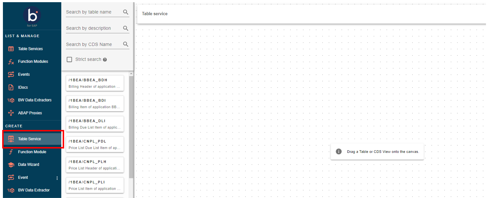
Navigate to Create Table Service
Build the Table Service — Join VBAK & VBAP
-
3
In the search box, type
VBAKto find the Sales Document Header table. Drag it onto the canvas.
Add VBAK table to canvas -
4
Search for
VBAP(Sales Document Item Data) and drag it onto the canvas.
Add VBAP table to canvas -
5
Create a join by selecting the Sales Document field (
VBELN) from the VBAK table and dragging it to theVBELNfield on the VBAP table. This creates an inner join on the document number.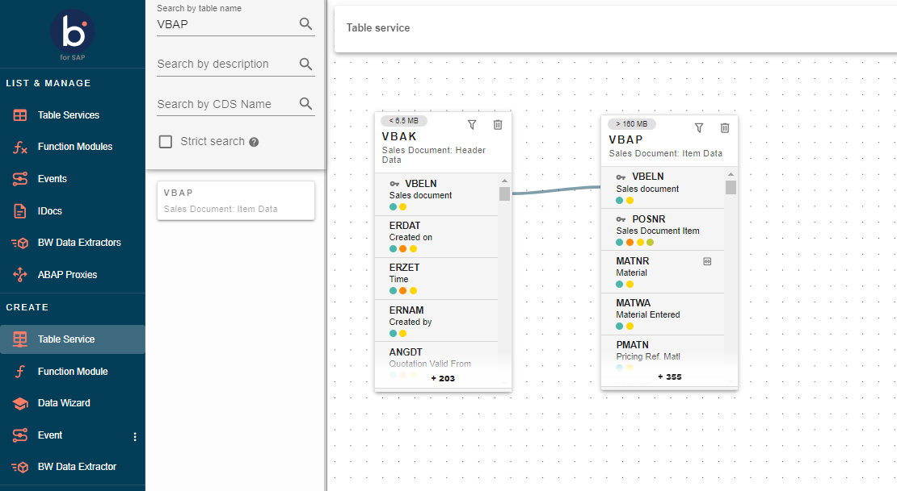
Create join on VBELN -
6
Click the filter fields icon on each table and deselect all fields by clicking the top checkbox.

Open field filter 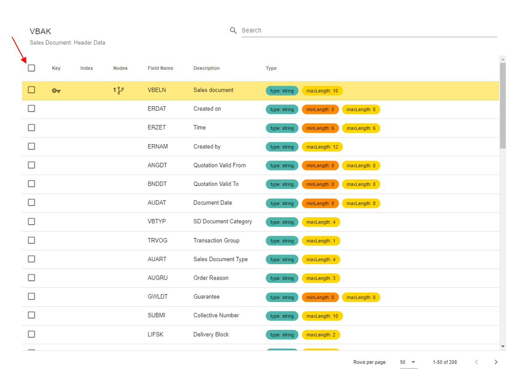
Deselect all fields -
7
Re-select only the following fields:
VBAK (Sales Document Header):
VBELN, ERDAT, AUDAT, VBTYP, NETWR, WAERK, VKORG, VTWEG, SPART, VKGRP, VKBUR, GSBER, KUNNRVBAP (Sales Document Item Data):
VBELN, POSNR, MATNR, CHARG, MATKL, ARKTX, PSTYV, KWMENG, KMEIN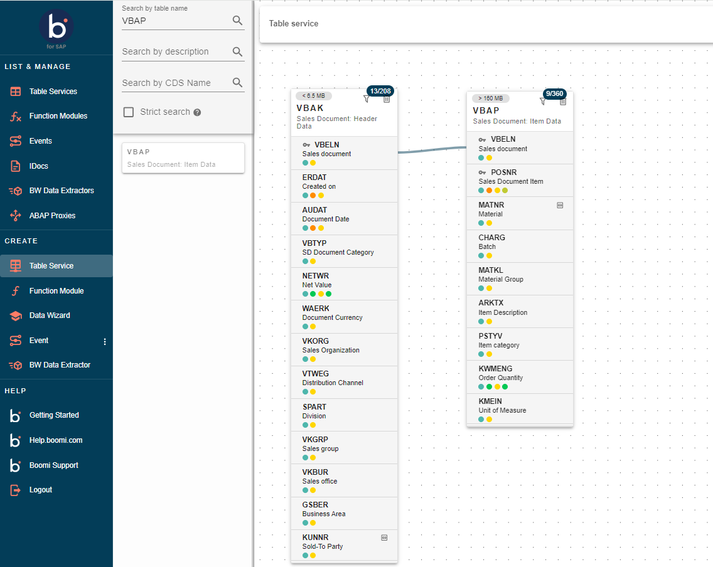
Selected fields from both tables
Save the Table Service
-
8
Click Configure Service. In the configuration dialog, enter a service name using the pattern SALES_ORDERS_XX (replacing XX with your initials). Click Save.

Configure and save the Table Service Record your Table Service nameYou will need the exact name (SALES_ORDERS_XX) when importing the profile in Section 2.
Login to AtomSphere & Copy the Sample Process
-
9
Log in to Boomi AtomSphere using the link below.
Credentials
UserProvided by trainerPasswordProvided by trainer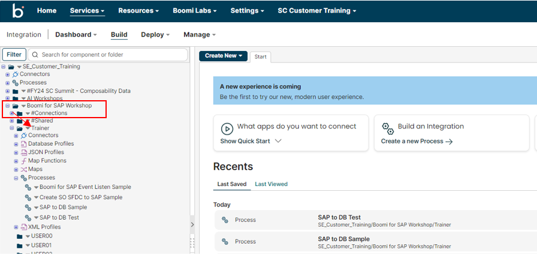
Boomi AtomSphere login -
10
In the Trainer folder, find the process SAP to DB Sample. Copy it to your USERXX folder.
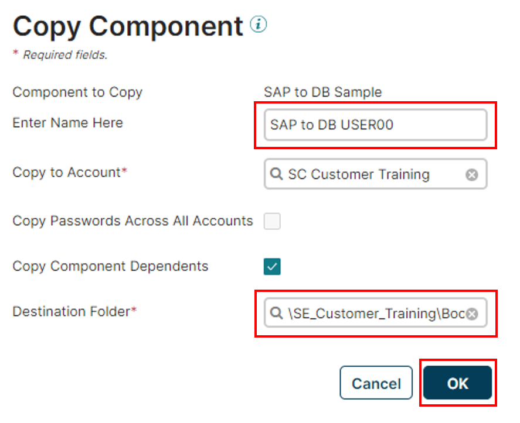
Copy SAP to DB Sample process -
11
Open the SAP to DB USERXX process in the canvas by double-clicking.

SAP to DB process canvas
Configure the Start Shape (Boomi for SAP — QUERY)
-
12
Click the Configure link on the Start shape. In the connector configuration, select SAP S4 Connection from the drop-down.
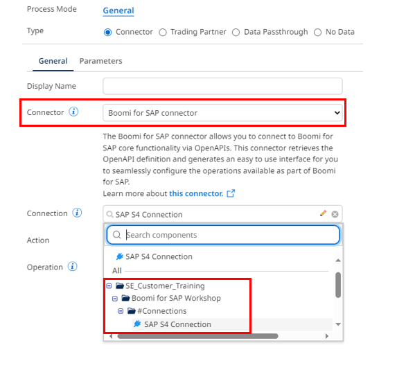
Configure Start shape -
13
Click + to create a new operation. Ensure the Action is set to
QUERY.
Set Action to QUERY -
14
On the Connector Operation screen, enter an operation name (e.g., Query Sales Orders USERXX) and click Import.

Name operation and click Import -
15
In the Import Wizard, select your Atom connection and filter by your Table Service name (SALES_ORDERS_XX). Click Next twice, then Finish.
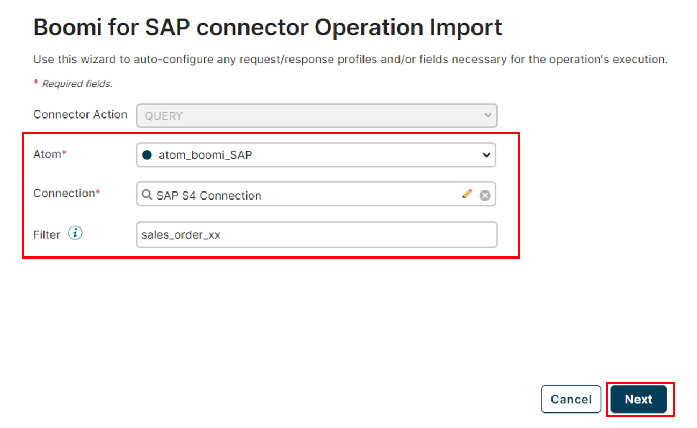
Import Wizard — select Table Service -
16
The profile is now imported. Change the Max Returned Rows value to
100and click Save and Close.
Set Max Returned Rows to 100 -
17
Click OK to return to the canvas.
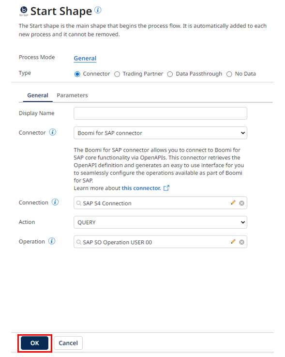
Return to canvas
Configure the Database Destination Shape
-
18
Click Configure on the Database shape.

Database shape on canvas -
19
In the Connector Shape, select the existing database connection.
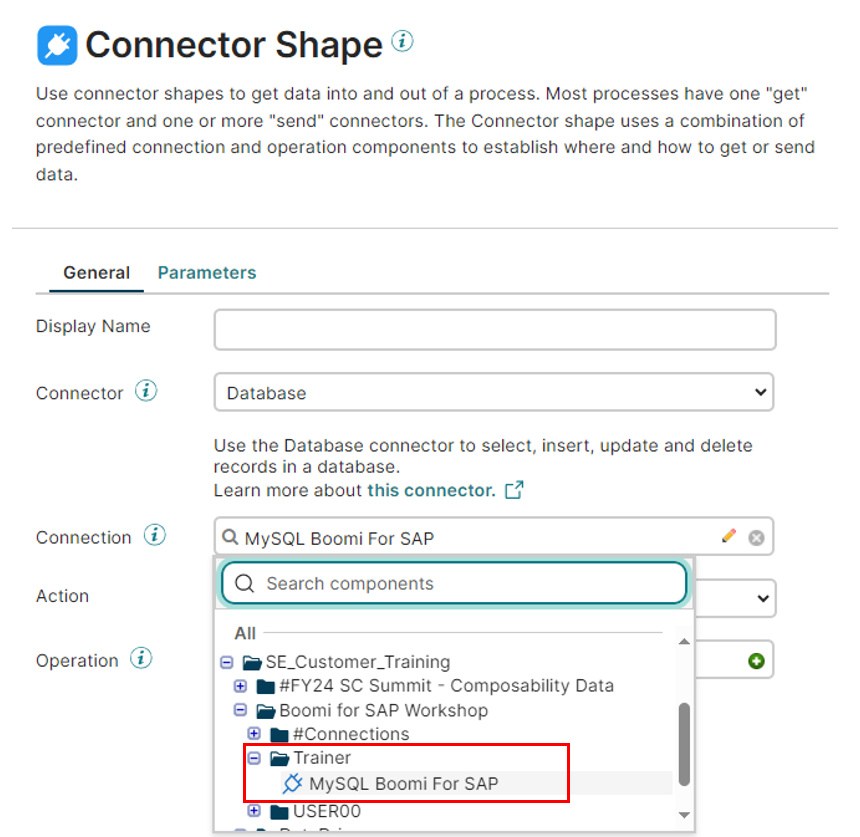
Select database connection -
20
Set Action to
Sendand click + to create a new operation. Click OK.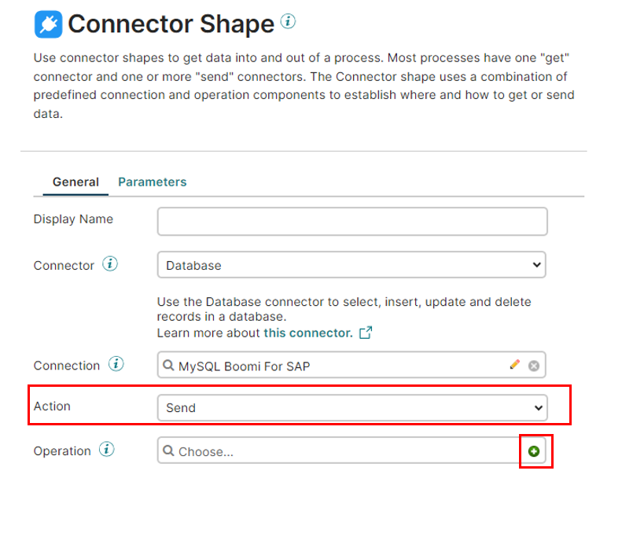
Set action to Send -
21
In the Database Operation screen, enter an operation name and click + to create a new Database Profile.

Create Database Profile -
22
Give the profile a name. Click Statement, choose type Dynamic Insert, then click Import.
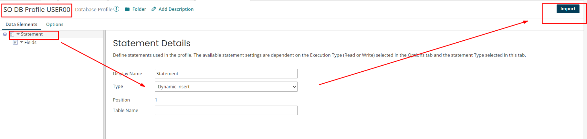
Choose Dynamic Insert -
23
In the Database Import Wizard, select the appropriate options and click Next.
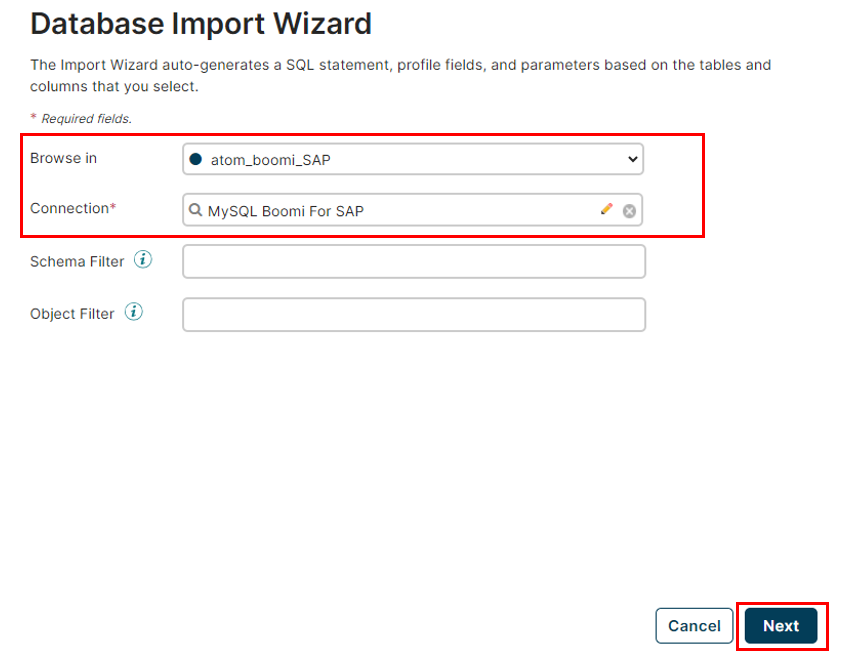
Database Import Wizard step 1 -
24
Select the Sales Orders SAP table and click Next.
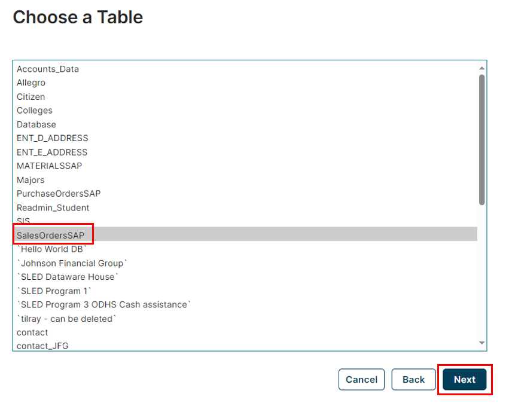
Select Sales Orders SAP table -
25
Select all fields, click Next, then Finish.
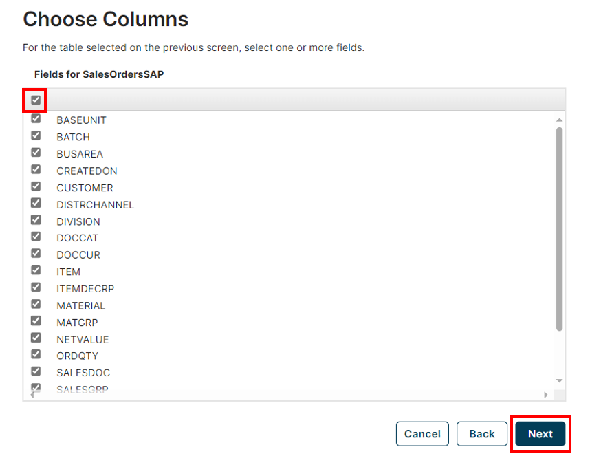
Select all fields -
26
Name the Database Profile SO DB Profile USERXX. Click Save and Close on the profile, then Save and Close again on the operation, and finally OK to return to the canvas.
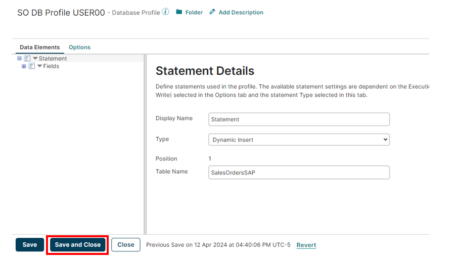
Save Database Profile 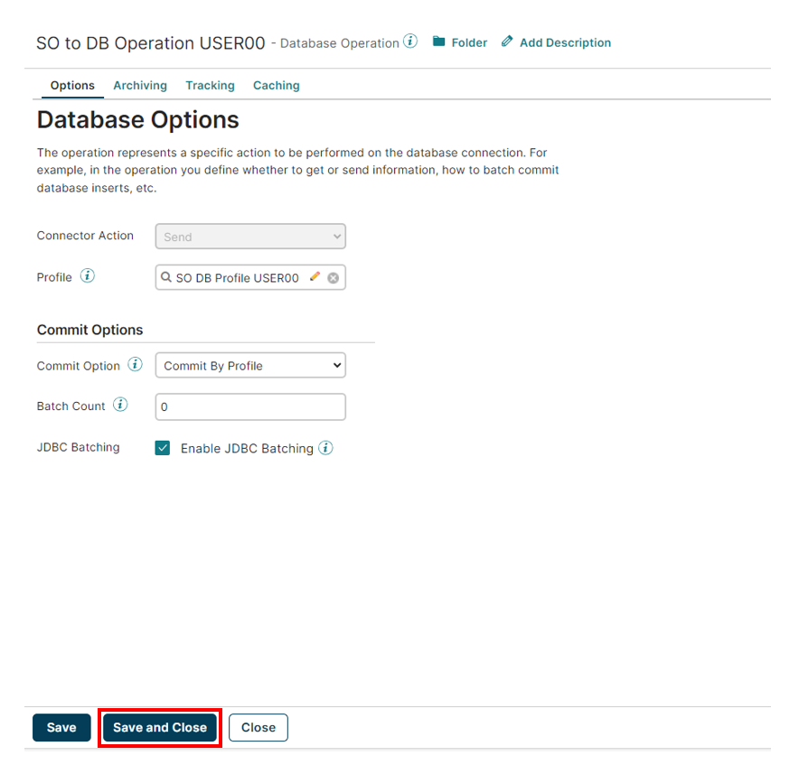
Save Database Operation
Configure the Map & Test the Process
-
27
Click Configure on the Map shape.

Configure Map shape -
28
Click + to create a new map. Name it (e.g., SAP to DB Map USERXX). Drag your JSON profile for the Table Service (SALES_ORDERS_XX) to the Source panel, and the DB Profile to the Destination panel.
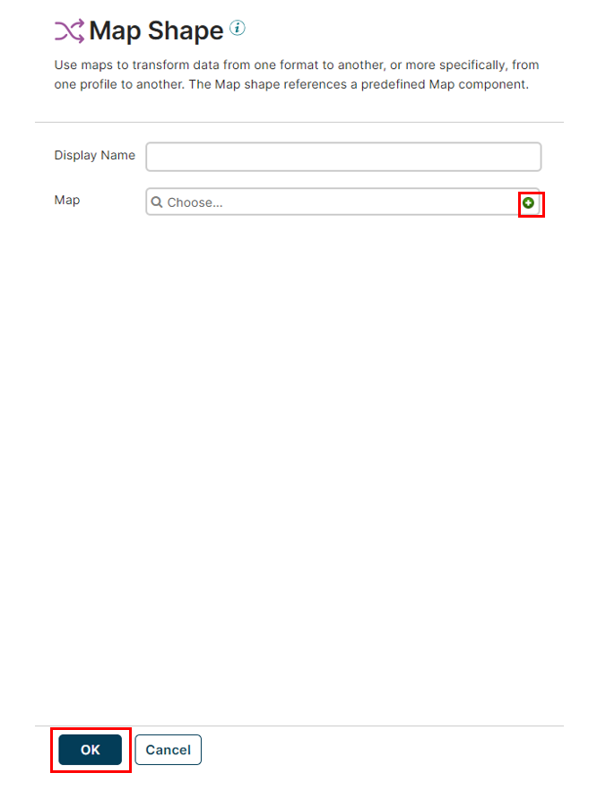
Create new map 
Assign source and destination profiles -
29
Map the following fields (drag a line from source to destination):
Source Element Destination Element schema/Array/items1/Object/VBAP.CHARG Statement/Fields/BATCH schema/Array/items1/Object/VBAK.GSBER Statement/Fields/BUSAREA schema/Array/items1/Object/VBAK.KUNNR@EXTERNAL Statement/Fields/CUSTOMER schema/Array/items1/Object/VBAK.VTWEG Statement/Fields/DISTRCHANNEL schema/Array/items1/Object/VBAK.SPART Statement/Fields/DIVISION schema/Array/items1/Object/VBAK.WAERK Statement/Fields/DOCCUR schema/Array/items1/Object/VBAP.POSNR Statement/Fields/ITEM schema/Array/items1/Object/VBAP.ARKTX Statement/Fields/ITEMDECRP schema/Array/items1/Object/VBAP.MATNR@EXTERNAL Statement/Fields/MATERIAL schema/Array/items1/Object/VBAP.MATKL Statement/Fields/MATGRP schema/Array/items1/Object/VBAK.NETWR Statement/Fields/NETVALUE schema/Array/items1/Object/VBAP.KWMENG Statement/Fields/ORDQTY schema/Array/items1/Object/VBAK.VBELN@EXTERNAL Statement/Fields/SALESDOC schema/Array/items1/Object/VBAK.VKGRP Statement/Fields/SALESGRP schema/Array/items1/Object/VBAK.VKBUR Statement/Fields/SALESOFFICE schema/Array/items1/Object/VBAK.VKORG Statement/Fields/SALESORG 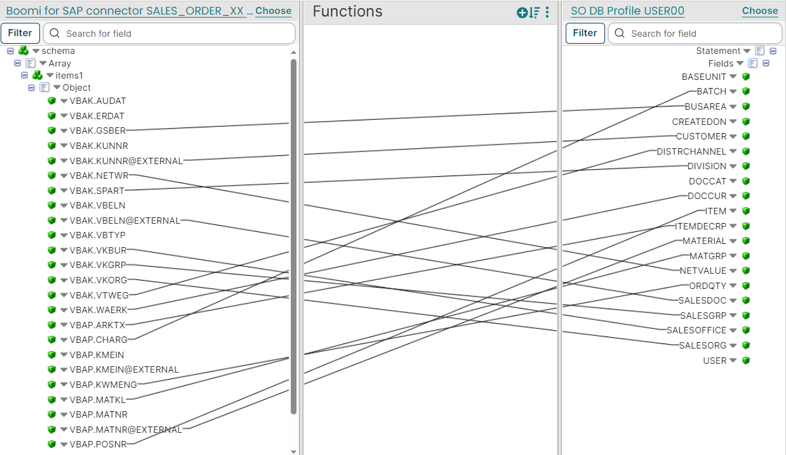
Field mapping overview -
30
Set a default value for the
USERfield in the destination profile. Use your folder number (e.g.,XX) as the default.
Set USER default value -
31
Click Save and Close to return to the canvas.
-
32
Optional: If you want to receive email notifications about the Sales Orders loaded, configure the Mail shape in the process. Enter your email address in the To field. If you do not want email notifications, disconnect the Mail branch.

Optional Mail shape configuration 
Enter email address -
33
Save and Test the process.

Save and Test process -
34
Choose the correct Atom and start the test run.
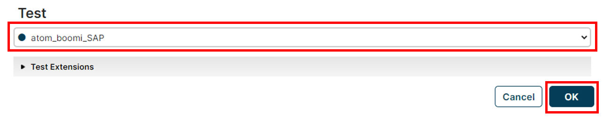
Choose Atom for test -
35
In the monitor screen you should see all green lights. Review the different logs to verify that SAP Sales Order records were successfully written to the database.
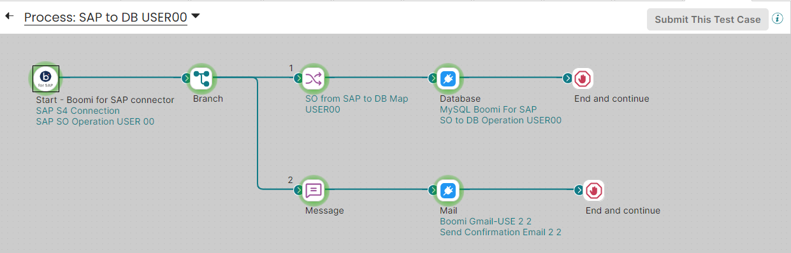
Monitor screen — all green Success!All connector shapes should show green. If you see errors, verify the Max Returned Rows setting and check that the field mapping matches the database schema.